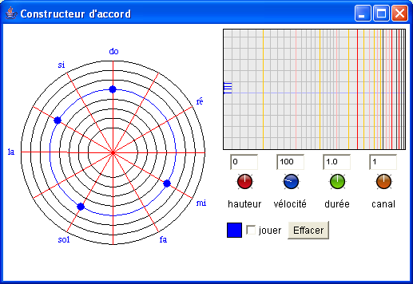

Le constructeur Accords permet de construire des expressions de base comme des notes, des silences et des accords. Les cercles représentent les différentes octaves et les rayons les demi-tons successifs. Les valeurs de hauteur, vélocité, durée et canal MIDI peuvent être ajustées : le réglage se fait par un mouvement vertical de la souris sur les boutons rotatifs, et peut être affiné par un appui sur Ctrl. Le résultat est disponible dans la case de droite.
Pour construire un objet silence, il suffit d'effacer toutes les notes et de prendre l'objet dans la case de droite. Un silence de la durée courante sera créé.